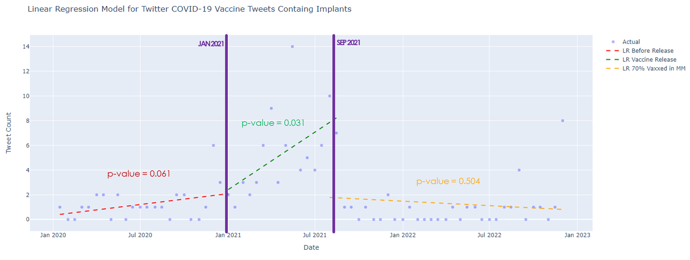
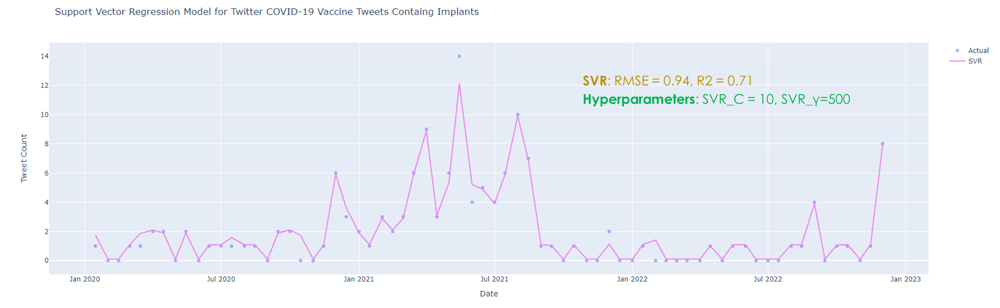

Fitting models to our time series data.
For data modeling and analysis, the team would implement one statistical model and one computational model. These models will represent real-life events that aims to uncover insights, patterns, and trends in our data. However, our group acknowledges that these models have their limitations in representing actual events since there are infinite information that cannot be contained within our dataset. Nonetheless, having these models are still useful in making judgment and analysis.
For this project, we aim to create a statistical model that will address our second problem regarding time series data. Creating the model could aids in testing our hypothesis — whether the release of COVID-19 vaccine in the Philippines triggered the surge of misinformation about harmful implants on the vaccines. Then, the computational model employs machine learning which feeds on train data and predicts the test data. The prediction captures non-linear relationship.
Statistical Hypothesis Test
To perform the hypothesis test, we first identified the appropriate statistical test. Then, we have validated the assumptions required for model. We also have provided statistics and visualization of our model. Lastly, we analyze and interpret the model. You may refer to the Models and Analysis document for this section.
Identify the Statistical Test
In choosing a statistical test, we must look into the types of variables involved in our data. The predictor variable is Date which is a quantitative variable. The outcome variable is Count which is also quantitative variable. Since both the predictor and outcome variables are quantitative, we must settle with Regression Test. Finally, we should check if we have more than one predictor variable. The team decided to test three predictors based on time periods which include Dates when the Vaccine was not yet released, Dates when the Vaccine was just released, and Dates after 70% of Metro Manila population has been vaccinated. Since there are multiple predictors or periods, we opted to use multiple linear regression.
Validate the Assumptions

Figure 1: Semimonthly Binning of Time Series Data
To recall, the group performed data binning on the obtained time series data. The binning technique employed is via grouping. The features are grouped as sum of Count in a semimonthly manner as shown in Figure 1. When binning was performed, the team generated 71 rows from the 71 semimonthly timeranges extracted from 15th January 2021 to 31st December 2023. With that, the assumption of having a 30 sample size or greater sample size was achieved.
Since Linear Regression is a parametric test, two more assumptions to be validated are skewness and kurtosis. Skewness is the measure of asymmetry across a distribution. In our computations, the Pearson's Median Skewness of our data is 1.0 which implies a mildly right skewed data. As such, no transformations are needed. For another validation, Kurtosis is the measure of tailedness across a distribution. The Kurtosis obtained is 5.43 which implies Leptokurtosis or positive kurtosis. Since our Kurtosis is 2.43 above normal which is 3.00, it is important to note that a higher kurtosis provides lesser confidence level.
Report the Statistics
To visualize our statistical hypothesis test, the segmented linear regression model was graphed over the scatter plot of actual data. First each time period, we have obtained different linear regressions (LR) with their corresponding p-value. For dates when the vaccine was not yet released, from January 2020 to January 2021, the LR is in red with a 0.061 p-value. For dates when the vaccine was just released, from January 2021 to September 2021, the LR is in green with a 0.031 p-value. For dates when 70% of population was already vaccinated in Metro Manila, from September 2021 to December 2022, the LR is in yellow with a 0.504 p-value.
Figure 2: Multiple Linear Regression Model of three Predictors over a Scatter Plot of Actual Data
By looking at the visualizations, we can observe that the increase on the first time period was gradual. Then, when the vaccine got released, a sudden surge of misinformed tweets regarding implants on COVID vaccines occured. Lastly, after a huge number of people got vaccinated, the number of misinformed tweets moderately lessened.
Interpret the Results
From our model, we could conclude the following: (1) there is no significant relationship, p>0.05, between the event before COVID vaccine's release and the count of misinformed tweets; (2) there is a significant relationship, p<0.05, between the event of COVID vaccine's release and the count of misinformed tweets; and (3) there is no significant relationship, p>0.05, between the event when 70% popoulation got vaccinated and the count of misinformed tweets. Therefore, we accept our hypothesis — the release of the COVID-19 vaccine triggered a surge of misinformed tweets.
ML: Computational Model
For the computational model, we first choose a model while discussing its structure and mechanism. We the perform machine learning by training it with train dataset and evaluating it with test dataset. Lastly, we evaluate the performance of our model. You may refer to the Models and Analysis document for this section.
Structure and Mechanism
The team decided to work on with the same data, which is time series data, for computational model. However, instead of using Linear Regression, we use Support Vector Regression (SVR) as our computational model. SVR is a machine learning algorithm that finds a function to approximate the relationship between the input variable and the output variable. The challenge is that the function obtained must maintain a minimal prediction error of the output. Unlike Linear Regression, SVR can handle non-linear relationships between the predictor and the outcome using a kernel function which maps data on a higher-dimensional space. In this project, we perform supervised SVR.
Training with Validation Set
Since we are conducting a supervised machine learning, our task is to separate train data from test data, and then to test different hyperparameters. In the models and analysis document, we split the data into train dataset and test dataset with a ratio of 85:15 and a random state of 45. Aside from that we have defined a parameter grid based on hyperparameters svr_C = [1, 10, 20] and svr_γ = [500, 1000, 5000]. Placing parameters under supervision via the hyperparameters would enable us to optimize our model. Lastly, we also have created a pipeline with StandardScaler and SVR.
Evaluation on a Test Data
After our model has been fed with train data and has been optimized by the hyperparameters, the generated SVR predictor was subjected to testing under the test data. These created our SVR model which is illustrated in Figure 3. By visual inspection, we can see that the SVR model performed well since the model greatly fits the actual datapoints. Shown also in Figure 3 are the derived values of the RMSE and the R2 of our model — RMSE = 0.94 and R2 = 0.71. These values will be useful in analyzing the perfomance of the model that would support the visual inspection.
Figure 3: Support Vector Regression Model over a Scatter Plot of Actual Data
With regards to hyperparameters svr_C = [1, 10, 20] and svr_γ = [500, 1000, 5000], the optimal parameters obtained when running the SVR predictor under the test data are svr_C = 10 and svr_γ = 1000. With these values, we have optained a well-fitted SVR model as proven by visual inspection and perfomance analysis in the next subsection.
Analysis of Performance
For performance analysis of the SVR model, we have obtained an RMSE of 0.94 and R2 of 0.71. Both RMSE and R2 quantify how well an SVR model fits the dataset. RMSE describes the difference the predicted values and the actual values, on average. Since the model has an RMSE of 0.94 which is very low, we can say that the predicted values is very near from the actual values. Meanwhile, R2 tells the proportion from 0 to 1 on how well can the model predict the outcome. Since we obtained an R2 of 0.71, the predictor variable Date is able to explain 71% of the variation on the outcome variable Count. The model's performance exceeded our expectations and demonstrated superior results.